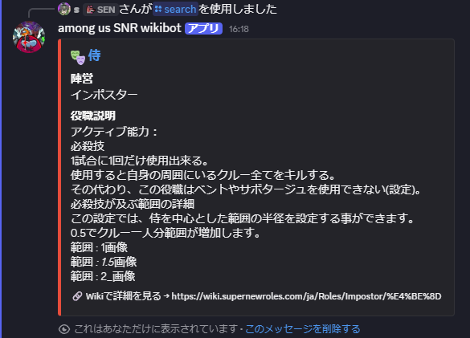
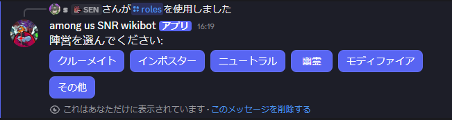

Super New Roles の全役職を Discord 上でかんたん検索。
ひらがな・カタカナ・ローマ字・漢字すべて対応。
ひらがな・カタカナ・ローマ字・漢字読みすべてに対応。途中まで入力するだけで候補が表示されます。
陣営・カテゴリ・説明文・アイコン・Wiki リンクをまとめて表示。ゲーム中の確認にも便利。
クルーメイト・インポスター・ニュートラル・幽霊・モディファイアをボタンで切り替えて閲覧。
毎日0時に Wiki を自動スクレイピング。新役職が追加されても翌日には反映されます。
Wiki 未掲載の役職は GitHub ソースから自動補完。152+ 役職を網羅的にカバー。
Render.com + UptimeRobot による監視で、24 時間安定稼働。スリープなし。

